GEM-Selektor version 2-PSI GEM-Selektor version 2-PSI
GEM-Selektor version 2-PSI GEM-Selektor version 2-PSIPrevious Page Back to Start Page
In this
section, we will create a project to calculate partitioning equilibria
in a solid-solution aqueous-solution system of alkali-earth carbonates
of Ca, Sr, Ba and Ra.
Next, some typical cases of metal partitioning between the aqueous
electrolyte
and several co-existing solid solutions will be investigated. Even
though
hypothetical, such examples also provide a quite realistic picture of
an
impact of non-ideal mixing onto partitioning, mainly because the
carbonate-
and sulphate binary solid solutions are relatively well understood (see
an
overview by P.Glynn, Rev. Mineral. Geochem. 2000 v. 40,
p.481-511),
and their Margules interaction parameters are known from experiments or
have
been estimated from differences in crystallographic radii of cations.
The necessary
end-members and some binary and ternary solid-solution phase
definitions are provided in the (inofficial) "Solutions" part of the
kernel GEMS-PSI database.
To proceed, start GEM-Selektor and click on the "Calculation of Equilibria" button, then click on the "New Project" button. In the Project record key dialog, enter two fields of a new key "RaBaSrCa:SolidSolutions:" and click "Ok". This will bring you into the "Elements Dialog" where the stoichiometry of the project system should be set up.
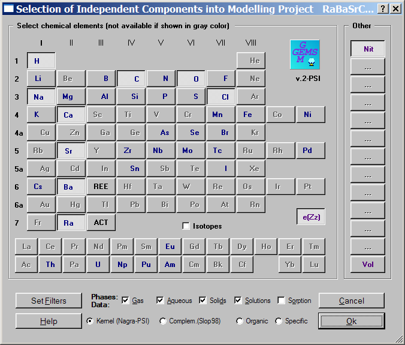
It is important to select
chemical elements (by clicking on their symbols) and a "Solutions"
checkbox in
the "Phases/Data" row
as shown on the picture, to make sure that all necessary Phase
definition records will be copied into the project database. Click on the "Ok"
button when ready. Next,
the setup dialog for
aqueous and gas phase models will appear (not shown). Click on the "Ok"
button -
this will select the Davies model for aqueous activity coefficients and
the
ideal gas mixture model for gases (defaults). In a few seconds
(depends on the performance of your PC), you should see the "Modelling
Project" dialog:
In the above dialog, click on the "Single-System Equilibria..." button
to create a first definition of the chemical system at 1 bar and 25 oC (SysEq record keyed "RaBaSrCa:G:TestSSAS:0:0:1:25:0:"
). The "Remake"
dialog will appear next; simply click on the "Ok" button to proceed.
Now, the
"Compos" page of the "System" window should be visible. In that window,
you need to enter the "recipe" for the bulk chemical composition of the
system. Enter also something into the comment lines. The recipe to
enter is:
1000 g water + 10 kg of air "AtmAirNit" + 0.1 mol
NaCl + 1 g BaCO3 + 100 g CaCO3 +10 g SrCO3
+ 0.01 g RaCO3. After entering
the recipe,
the "Compos" page should look like this:
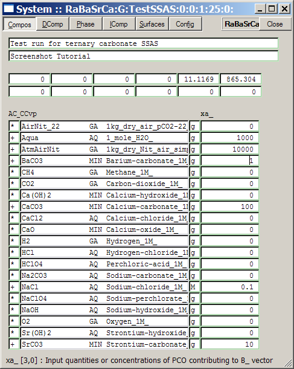
As seen on
the screen image, there is no entry in the PCO list for adding 0.01 g
RaCO3 to the system bulk composition. This is not a problem
because the stoicniometry (formula) of any Dependent Component
from the system definition can be used for addition to bulk composition
just in the same way as PCO amounts on the "Compos" page on the
above screen image. Thus, to complete our recipe, switch to the "DComp"
page of the "System" dialog , scroll the list of DC down until you find
the RaCO3@ species, and put 0.01 g into the
respective cell of the xd_ column (do
not forget to change "M" to "g" as a code of units of measurement in
the respective XDun_ cell).
Now, switch to the "Single
Thermodynamic System" dialog and click on the "Calculate BCC"  toolbar button; then examine the list of phases in the "Input:
System Definition" page. Below aqueous and gaseous phases, you should
see entries for two ternary and four binary solid solution phases; each
of them can
be expanded to see its end-members. Switch off the following entries:
toolbar button; then examine the list of phases in the "Input:
System Definition" page. Below aqueous and gaseous phases, you should
see entries for two ternary and four binary solid solution phases; each
of them can
be expanded to see its end-members. Switch off the following entries:
(Ba,Ca)CO3(reg)
(Ra,Ca)CO3(reg)
(Sr,Ca)CO3(reg)
Witherite
Aragonite
Calcite
Strontianite
The resulting page should look like that shown below:
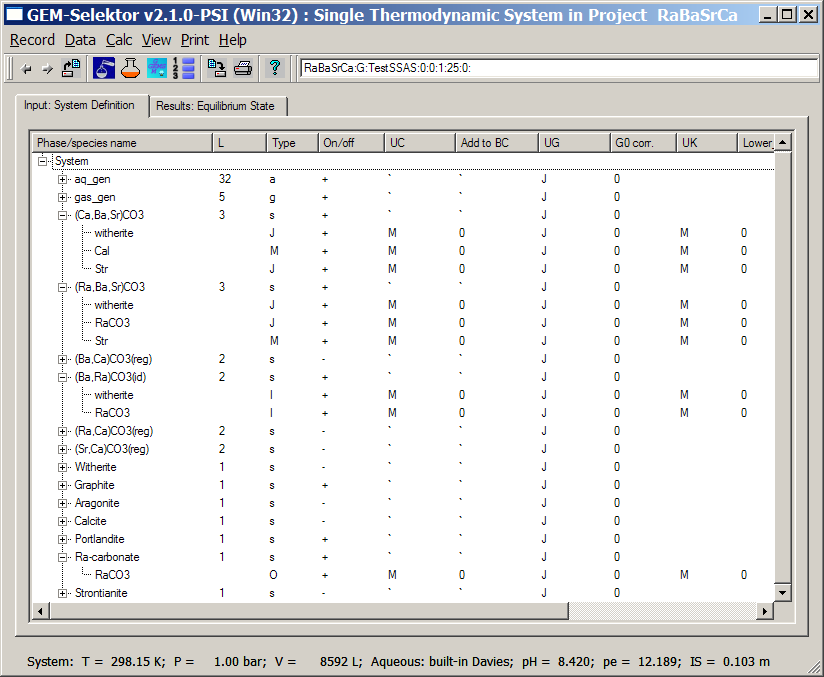
Calculate bulk composition
( ) again and then
GEM-calculate ( ) the equilibrium state. After
clicking on the "Accept" button in the
"Progress Dialog", you should see the following phase speciation tree:
) the equilibrium state. After
clicking on the "Accept" button in the
"Progress Dialog", you should see the following phase speciation tree:
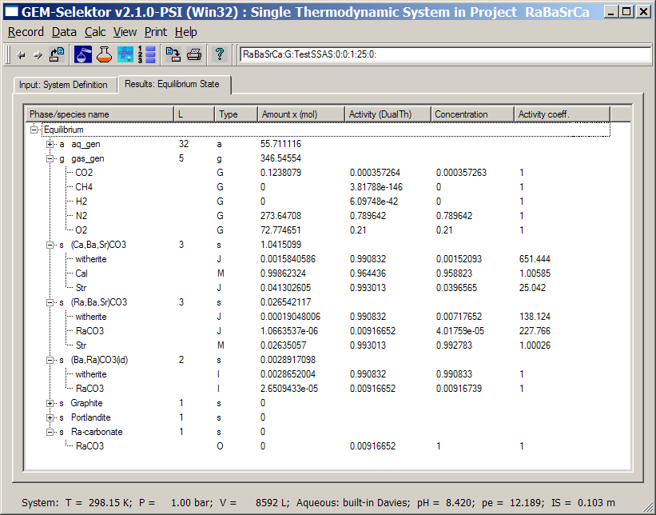
In addition to aqueous electrolyte and gas mixture, we have three solid
solution phases present in this (hypothetical) partitioning
equilibrium: two non-ideal ternaries and one ideal binary. Even
though setting up and
calculating this system was technically simple, the behavior of
partitioning
equilibria is complex. To understand what has been calculated, we have
first
to look at how the phase definitions of solid solutions were arranged.
This
can be done by clicking on the "Explore results"  toolbar button and selecting
the "EqPh" page in the appearing EqDemo window.
toolbar button and selecting
the "EqPh" page in the appearing EqDemo window.
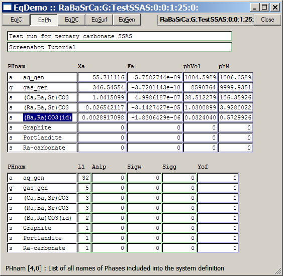
Select a phase name with
the left-mouse drag (as shown above) and press the F7 hot key - this will get you into
an underlying Phase definition record from your project database:
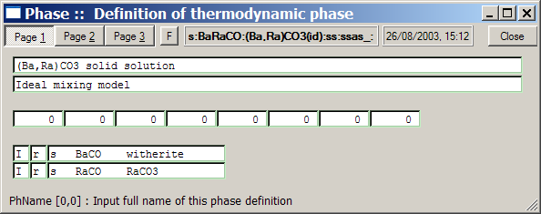
The definition of ideal
mixture just tells the program which end-members make it up (in this
case, witherite BaCO3 and radium carbonate RaCO3,
with stoichiometries and thermodynamic properties defined in the
respective ReacDC database records). The (Ba,Ra)CO3
solid solution can be considered as a Raoultian ideal mixture because
the ionic radii of Ba+2 and Ra+2 are similar,
thus, no significant non-ideal effects are expected. This is not the
case, however, for the other two ternary solutions involving Sr+2
and Ca+2 end-members. Close the "Phase" window, mark the "(Ca,Ba,Sr)CO3"
entry in the "EqPh" page, and
press F7 to see the ternary phase
definition:
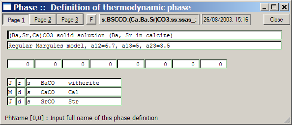
As seen on Page 1 above,
the solid solution is assembled from three end-members, two of which
are assumed to be minor (marked as "J" ) and one (calcite) - a major
end-member (marked as "M"). This coding is necessary
because the positive values of interaction parameters for all three
binaries in this ternary model are large enough to produce miscibility
gaps (more about non-ideal solid solution models can be found in
the Activity-Coeffs.pdf file). How the mixing model
itself is arranged, can be seen on Page 3 of this Phase window:
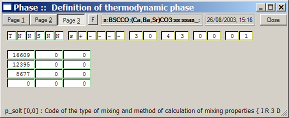
The code "T" in the first
row defines a regular Margules ternary mixing model; the code "S" tells
the program that a built-in function to calculate the activity
coefficients of end-members has to be used and it will take the
interaction parameters from a table below (expressed in J/mol units).
Now, close the Phase
window, mark the "(Ra,Ba,Sr)CO3"
entry in the "EqPh" page, and
press F7 to see the definition of second
ternary phase:
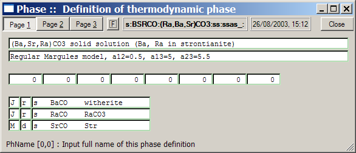
This solid solution
is arranged in the same way as previous, except that a miscibility gap
is not expected in the witherite-RaCO3 binary because of a
small assumed value of the interaction parameter (a12 = 0.5), yet large
miscibility gaps are expected within two other binaries; and the
strontianite Str is denoted as a major ("M") end-member. Of course, all
these interaction parameters and
end-member coding can be changed, or new solid solutions can be added
in
the "Thermodynamic Database" mode of GEM-Selektor (as shown e.g. on Page
22 of this screenshot tutorial).
Now,
close the Phase window and get back to the "Single Thermodynamic
System" dialog
(expand gas and solid solution phases):
You can see that this
equilibrium contains five co-existing solution phases: non-ideal
aqueous electrolyte "aq_gen",
ideal gas mixture "gas_gen", "mainly calcite" non-ideal solid solution
"(Ca,Ba,Sr)CO3",
"mainly strontianite"
non-ideal
solid solution "(Ra,Ba,Sr)CO3", and "mainly witherite" ideal solid
solution "(Ba,Ra)CO3(id)". Three potential single-conponent solid
phases do not appear in positive amounts as they are strongly
undersaturated.
In this partition
equilibrium state, cations are distributed between the aqueous
electrolyte and three solid solution phases, and carbonate CO3
is distributed between all five phases. Take, for instance, radium - a
minor component in this hypothetical system. Out of total Ra amount
3.496e-5 mol (you can see it e.g. in the "b" column on "EqIC" page of
"EqDemo" window which you can open with toolbar
button), 2.6508e-5 mol or 75.8% went into
the "(Ba,Ra)CO3(id)" phase, 1.07e-6 mol or 3.05% is
bound in the "(Ra,Ba,Sr)CO3" phase, and the rest 21.15% or
7.38e-6 mol is dissolved in the aqueous phase.
Note that radium is mainly
partitioned into the "(Ba,Ra)CO3(id)" phase because of two reasons.
Firstly, witherite is relatively less soluble among pure alkali-earth
carbonates. Secondly,
the stability of radium end-member in the "(Ra,Ba,Sr)CO3" phase is much influenced by a
high activity
coefficient of RaCO3 end-member ( 227.77 ), which makes it
less
preferential for radium to be incorporated into "mainly strontianite",
even
though there is ca. 10 times more strontium than barium in this system.
The
mole fraction ca. 0.01 of RaCO3 in the (Ba,Ra)CO3(id) solid solution
keeps
the activity of RaCO3 end member close to 0.01 (a = 0.009)
and, consequently, pure RaCO3 is ca. 100 times undersaturated, as seen
on
the screenshot above.
Another interesting thing
to see in this calculation is the activity of BaCO3 (witherite): in all
three phases it is the same (a =
0.99083), although concentrations (mole fractions) of "witherite"
end-members are different between
three phases. This is because of different values of activity
coefficients - rather high in both ternary phases that limit mole
fractions of witherite to minor values at the edges of miscibility
gaps. For instance, mole fraction of witherite in "mainly strontianite"
phase is only 0.7 %, and that in the "mainly calcite' phase is 0.15 % -
both are negligible. In the "mainly witherite" phase, the mole
fractions of strontianite and calcite must also be expected negligible
(below 1 %), and since this phase itself is present in small amount
(2.9 mmol), the stontianite and calcite end members in the "mainly
witherite" phase have been safely ignored.
Overall, this system has
been set up correctly in a sense that all four possble phases that may
appear together
due to highly non-ideal mixing effects have been included (the
Ra-carbonate phase was undersaturated because the total amount of Ra in
the system was low).
Now, it is easy to explore
how the partitioning of Ra, Ba and Sr will change in responce to
changes in the bulk composition of the system. Execute the
"Record" "New(Clone)" menu command and change the fourth field of SysEq
record key from 0 to 1, to "clone" a new system "RaBaSrCa:G:TestSSAS:1:0:1:25:0:"
. In the appearing "Compos"
page of the "System" window, change the amount of BaCO3 in the "recipe"
from 1 g to 10 g. Press Enter, close the "System" window and
calculate the equilibrium state (use the "Run GEM"
toolbar button and press "Accept" button when GEM IPM algorithm
has converged). Now, click on the "Explore results" toolbar button to see the
"EqIC" page of the appearing "EqDemo"
window:
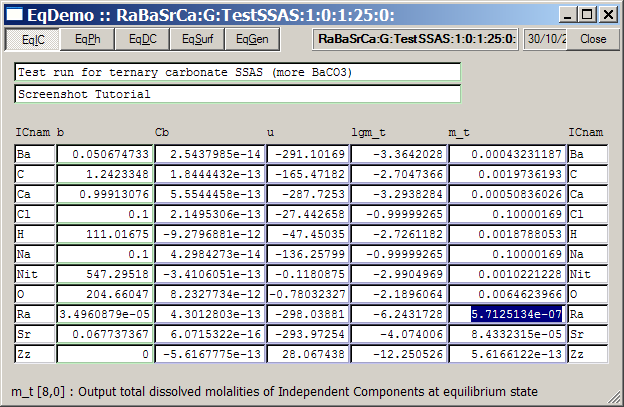
The calculated dissolved
Ra concentration
is now 5.7e-7 molal. To compare with our first example, simply switch
to
the "Single Thermodynamic System" dialog (do not close the "EqDemo"
window),
click there on the "Display previous record"  toolbar button, and switch back to the "EqDemo" window. The
previous calculation resulted in 7.385e-6 molal of dissolved Ra, or
almost 13 times greater than in the second case (remember that we have
made the addition of
BaCO3 only 10 times more). By toggling between two calculations
with
toolbar button, and switch back to the "EqDemo" window. The
previous calculation resulted in 7.385e-6 molal of dissolved Ra, or
almost 13 times greater than in the second case (remember that we have
made the addition of
BaCO3 only 10 times more). By toggling between two calculations
with  and toolbar buttons, you can see
that dissolved concentrations of Ba, Ca, and Sr have changed only
slightly. What caused such a non-linear and strong
effect on dissolved radium?
and toolbar buttons, you can see
that dissolved concentrations of Ba, Ca, and Sr have changed only
slightly. What caused such a non-linear and strong
effect on dissolved radium?
This is easy to see when
one switches to the "Results" page of "Single Thermodynamic System"
dialog and expands all solid solution phases, as shown below:
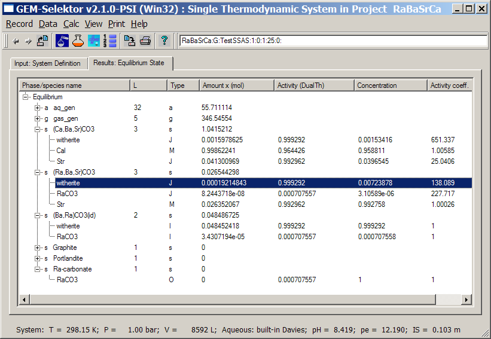
Comparison of this
partitioning with the initial one
shows that amount and composition of the "(Ca,Ba,Sr)CO3" phase almost
did not change (this is why total dissolved concentrations of Ca, Ba
and Sr almost did not change either). The amount and mole fraction of
"witherite" end-member in the "(Ra,Ba,Sr)CO3" phase increased in less
than 1% (remember, we added 10 times more BaCO3 to the recipe)! The
reason for that is that both non-ideal ternary solid solutions are
"saturated" with BaCO3 and cannot accept more barium because
the amounts of their "major" end-members (calcite and strontianite) did
not change.
So, almost all the added
barium must have been precipitated into the "(Ba,Ra)CO3(id)" solid
solution phase. Indeed, the new amount of the latter phase is 0.0485 /
0.00287 = 17 times more than that in the initial calculation. A
consequence for that is that radium re-partitioned even stronger into
the "mainly witherite" phase (the amount of "witherite" end-member in
this phase is now 3.4307e-5 / 5.6508e-5 = 1.3 times more).
However, the mole fraction of "witherite" in "(Ba,Ra)CO3(id)" phase has decreased ca. 0.009167
/ 0.000708 = 13 times, and this caused ca. 13 times decrease in
total dissolved Ra molality.
Let us see now what
happens if
there is not enough barium in the system to precipitate the "mainly
witherite" phase. To do this, "clone" a new SysEq record "RaBaSrCa:G:TestSSAS:2:0:1:25:0:"
. In the appearing "Compos"
page of the "System" window, change the amount of BaCO3 in the "recipe"
to 0.1 g; press Enter, close the "System" window and
calculate the equilibrium state (shown below).
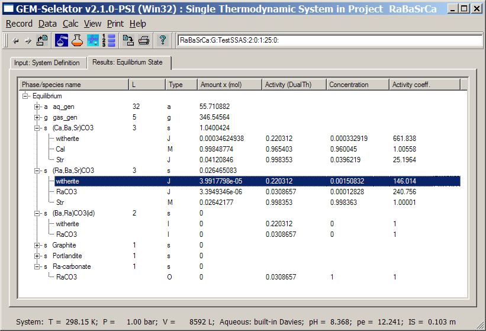
Only two solid phases
are present, the "mainly witherite" phase is gone, as expected,
because its major end-member "witherite" is now undersaturated ( a
= 0.22 ). The remaining barium is re-distributed between "mainly
calcite", "mainly strontianite", and aqueous phases; radium is
distributed between "mainly strontianite" and aqueous phases.
Total dissolved concentration of barium has decreased ca. 3.6 times to
0.00012 molal, and total dissolved radium has increased to
3.16e-5 molal, which is still 1.5 orders of magnitude below that at
equilibrium with pure RaCO3. The system composition went
away from one of the
possible miscibility gaps, and the number of co-existing phases has
decreased by one.
From GEM results such as considered above, one can easily calculate various distribution ratios and partitioning coefficients to compare with experimental partitioning data. One can also set up various Process simulators to plot partitioning diagrams, modeled isotherms and even Lippmann diagrams. Such process simulators are constructed basically in the same way as described on Page 11 in this screenshot tutorial. In this example, there are three non-ideal binary solid solutions
(Ba,Ca)CO3(reg)
(Ra,Ca)CO3(reg)
(Sr,Ca)CO3(reg)
that were switched off in the calculated example. You can create a new SysEq record with one of these phases switched on (and other solid solutions switched off) and use it as a "parent" system to create Process simulators that plot, e.g., partition isotherms, i.e. plot total dissolved concentration of one metal as function of it's end-member mole fraction in solid solution.
Back to main GEMS-PSI page